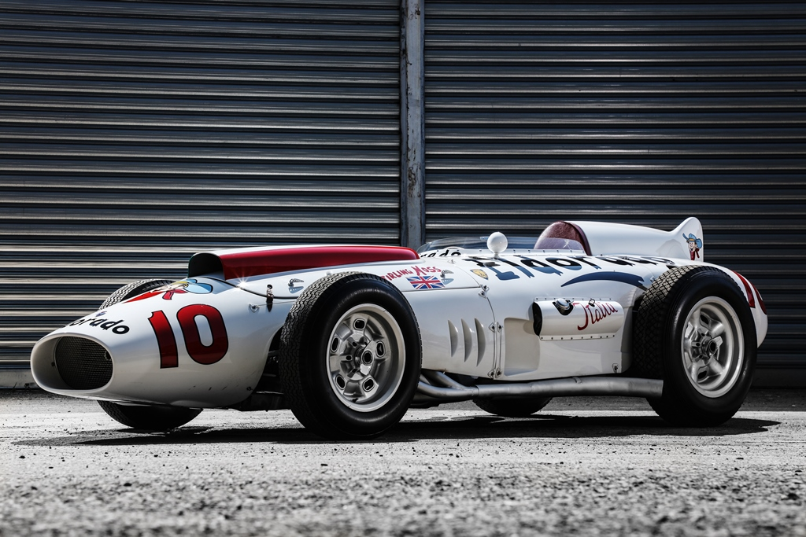
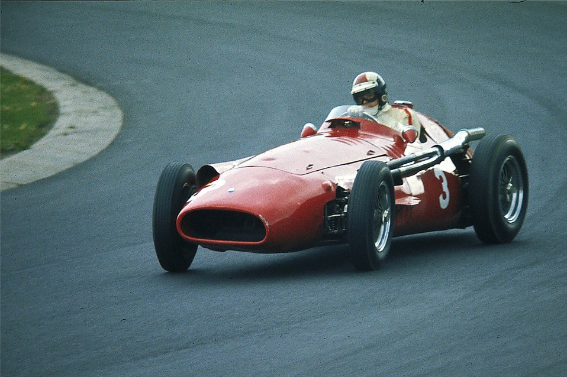
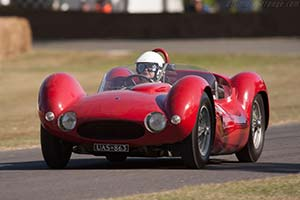
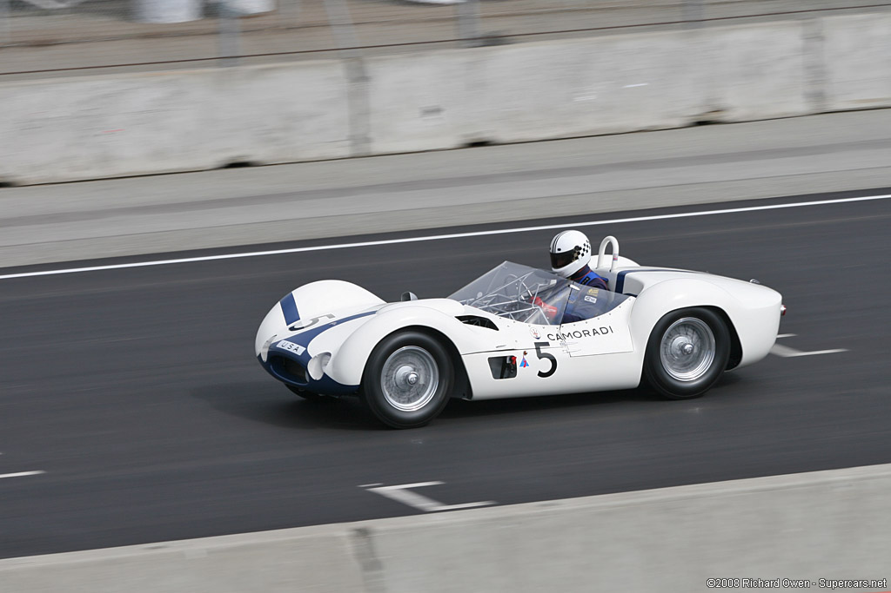
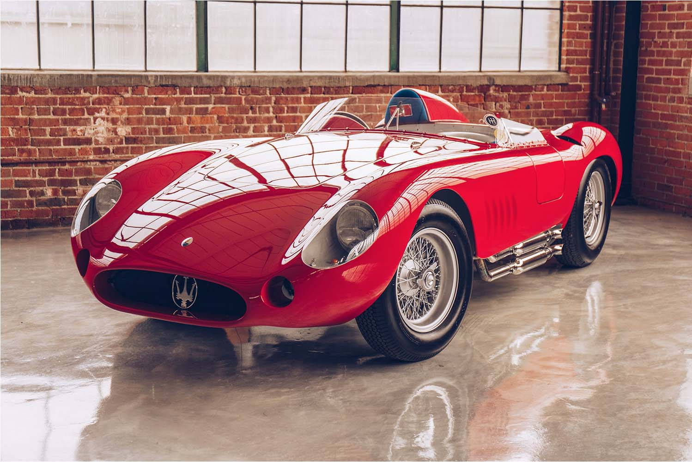

A prototype of the Maserati MC20, the new Maserati super sportscar, will pay homage to Sir Stirling Moss, the British motor-racing ace who died on 12 April at the age of 90. The design used for this prototype is taken from the Maserati Eldorado, the iconic single-seater driven on its debut in Monza in 1958 by Stirling Moss himself, at the “Trofeo dei due Mondi”.  It is very fitting that the Trident Brand has chosen the date of 13 May to recall the great British driver, since there is no doubt that his victory in the Monaco F1 Grand Prix on 13 May 1956, at the wheel of the Maserati 250F, stands out amongst the many trophies in the champion's collection. It was an amazing win, since Moss led the race from the first to the last of the 100 laps around the winding, demanding Monaco circuit. Maserati's day of triumph was completed by taking third place as well – also in a 250F - by French driver Jean Behra. Moss, who recorded 16 victories in 66 starts in Formula 1 Grand Prix racing, is one of the most successful drivers never to have won the world title. Sir Stirling came within a whisker of the crown on more than one occasion, finishing in second place on four occasions, and third in three championships. For this reason, he was known as the "king without a crown". In the 1956 season and some 1957 races, Moss drove a Maserati 250F (“his favourite”, as he often recalled), beaten only by Juan Manuel Fangio. Moreover, Moss's Argentinian rival took his 1957 title at the wheel of another 250F, confirming the reliability and superiority of the Modena-built car. Through this MC20 prototype with Stirling Moss's "signature", Maserati wishes to commemorate one of the greatest names in the annals of world motorsports, who wrote some of the finest pages in its own racing history. The list of Maserati cars driven by the British driver also includes the Tipo 60 Birdcage, Tipo 61 and 300 S.  The choice of a prototype of the MC20 to dedicate to Sir Stirling is no coincidence: through this model, the Trident Brand aims to underline its sporting vocation, and above all return to a leading role on the racing circuits, after the latest world championship won in 2010 with another extraordinary car, the MC12. The arrival of the MC20 is an important event for the Modena-based company, not only because of the racing comeback, but also because it will be the first car to adopt a new engine 100% designed, developed and produced by Maserati itself. Sir Stirling Moss would certainly have liked the new MC20: a car that fully embodies Maserati's truest values in terms of the performance, driving pleasure and innovative contents superlatively expressed in all Trident Brand models.